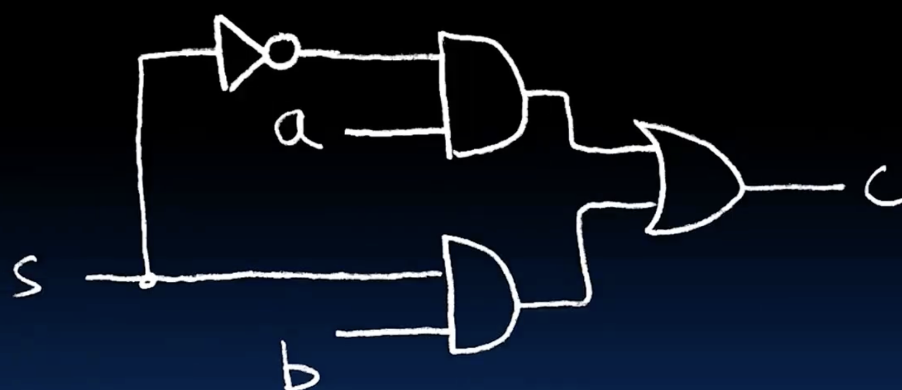
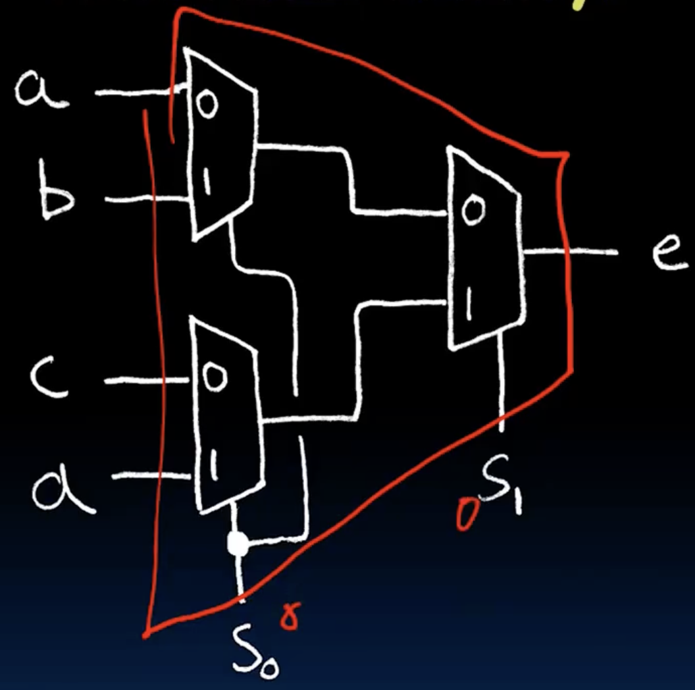
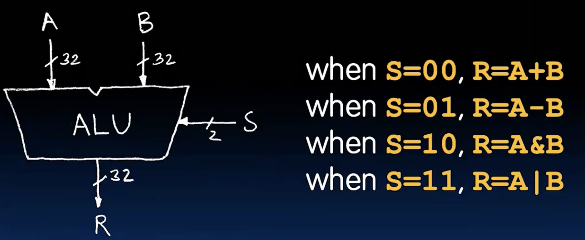
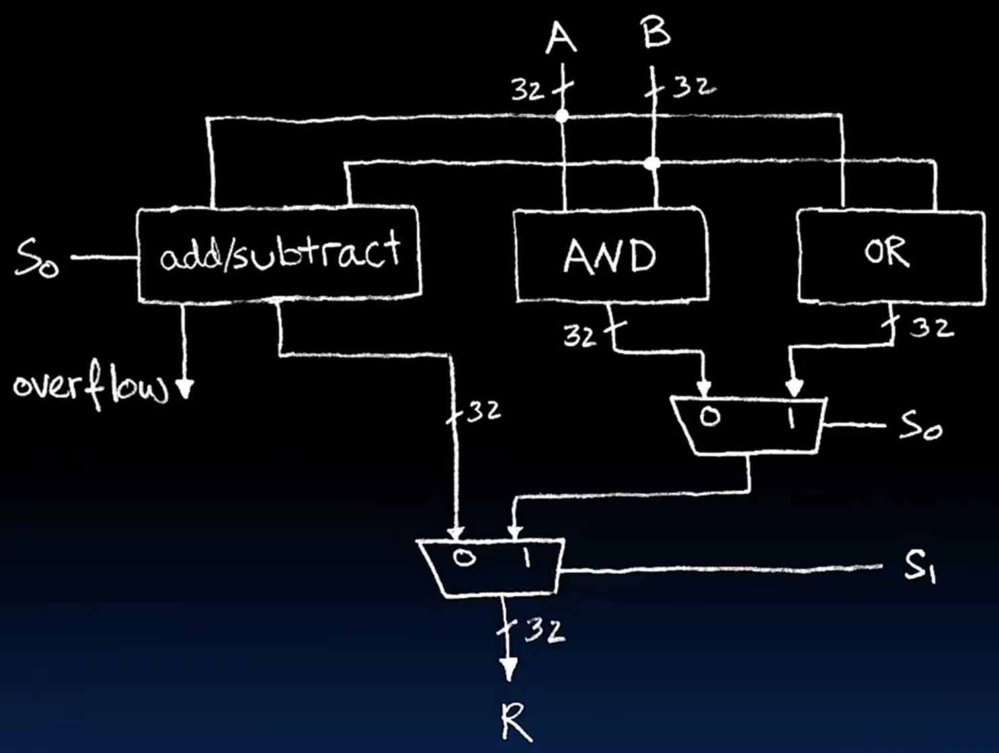
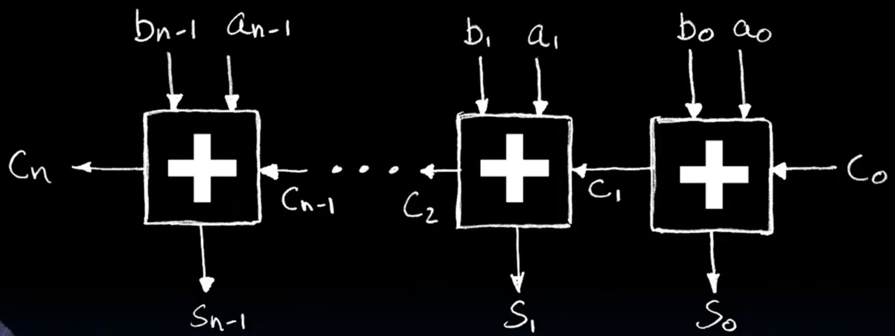
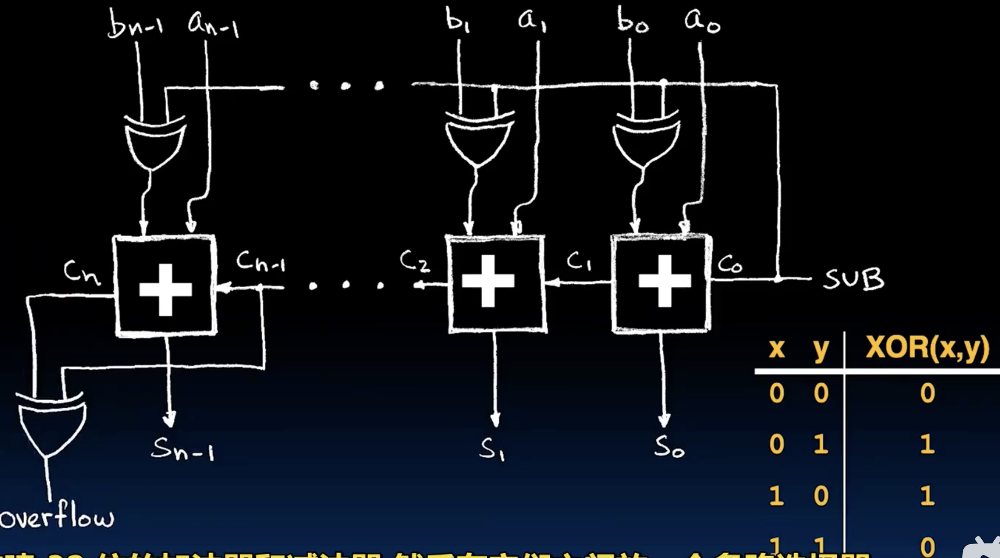

MUX 多路选择器
- A，B两个n位的输入，S为选择信号，输出是A或者B中的一个
- 我们可以首先构建一个1位的MUX，然后通过级联来构建n位的MUX
|
|
- 如下图所示，MUX的简化表示

- 如果是一个4选1的MUX呢，只需要把S选择信号改为2位即可，输出是A，B，C，D中的一个。 out = (~S1)(~S0)A + (~S1)S0B + S1(~S0)C + S1S0D, (emm,就不用写出真值表了，直接上公式)
- 问题是这里的2位信号我们如何产生呢？不考虑什么强大的操作，只考虑使用已经实现的2选1MUX来实现4选1MUX。
- 4选1可以看成是二层（3个）2选1MUX，第一层从AB中选一个，CD中选一个，第二层从赢家中选择一个。

Arithmetic Logic Unit (ALU)
- ALU是计算机中的算术逻辑单元，负责执行算术和逻辑运算。
- ALU的输入通常包括两个操作数和一个控制信号，输出是运算结果。
- ALU可以实现多种运算，如加法、减法、与、或、异或等。
- 示意图：


- 这里头的A和B输入都是32位的，and和or模块只需要并联32个and，or门即可，只剩下较复杂的加法器和减法器了。
Adder/Subtractor
- 首先实现一个4位（半个字节）的加法器。
- 对于最低位的加法，S_i = A_i XOR B_i, C_i = A_i and B_i
- 对于其他位的加法，考虑到进位的存在，写出真值表：
|
|

-
对于overflow的判断，如果是无符号整数，那么overflow发生在c_n不为0的时候； 如果是有符号整数，那么overflow发生在 xor(c_n-1, c_n)不为0的时候，如果c_n-1 = 0 , c_n = 1,说明负数溢出，如果是c_n-1 = 1, c_n = 0,说明正数溢出。 溢出的另一种体现就是溢出时的二进制已经无法在当前位数表达实际的数值了，比如对于4位的有符号整数，范围是-8~7，如果我们计算5+4=9，结果在二进制中是1001，但是这个结果在4位有符号整数中表示的是-7，所以就发生了溢出。
-
subtractor的实现其实很简单，a - b = a + (-b), -b = ~b + 1,所以我们可以先把b的每一位进行取反，然后在开头c0设置为1，巧妙的是当xor的一个元素是1，它会把另一个元素取反，所以我们不需要单独的线来处理，直接把c0的那条线接到xor的输入就行了。
